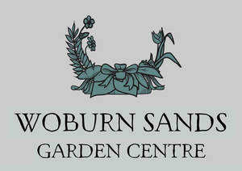
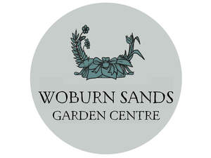

Trade Mark Journal No.2025/017 25 April 2025
UK00004188026 11 April 2025 (35,37,41,43)
Mark 1

Mark 2

- Class 35
- Retail and wholesale services, including in-store or online, in connection with the sale of gardening, agricultural, horticultural, forestry and landscaping products, plants, flowers, seeds, bulbs, gardening tools, hand tools and implements, electric tools and implements, power tools and implements, lawnmowers, spades, shears, rakes, hoes, hoses, sprinklers, fertilisers, soils, composts, weed killers, herbicides, pesticides, fungicides, bactericides, insecticides, plant pots, garden furniture, garden ornaments, barbecues and barbecue equipment, parasols, gazebos, outdoor heating, fire pits, sheds, pets, birds, fish, wildlife, wildlife and bird feeders and food, wildlife and bird houses, baths and nesting boxes, pet and bird cages and accessories, foodstuffs for animals, animal, plant and lawn care products, water features, baskets, containers, planters, garden clothing, garden gloves, door mats, garden lighting, homeware, cookware, kitchenware, tableware, cutlery, glassware, textiles, soft furnishings, cushions, candles, ornaments, picture frames, clocks, mirrors, home decorations, bedding, bathroom accessories, cleaning equipment, furniture, storage solutions, toys, games, puzzles, books, stationery, greeting cards, wrapping paper, giftware, decorative items, holiday decorations, artificial flowers, picnic baskets, lunch boxes, cool bags, picnicware, aprons, food, cakes, biscuits, confectionery, beverages and snack foods, and clothing, footwear and headgear; the bringing together, for the benefit of others, of a variety of gardening, agricultural, horticultural, forestry and landscaping products, enabling customers to conveniently view and purchase those goods in a garden centre and/or retail store, from a catalogue by mail order, or via an internet website; advertising, marketing and promotional services relating to garden centres and products and services provided by garden centres, retail stores, cafés and restaurants; commercial information services relating to garden centres, retail stores, cafés and restaurants; business administration, management and operation of garden centres, retail stores, cafés and restaurants; information, advisory and consultancy services relating to any of the aforesaid services.
- Class 37
- Car washing services; vehicle maintenance and repair services; cleaning of vehicles; polishing of vehicles; vehicle detailing services; provision of information and consultancy services relating to car washing and vehicle maintenance; application of protective coatings to vehicles.
- Class 41
- Entertainment services; provision of ice rink facilities; rental of ice-skating equipment; petting zoo services; animal experience services for entertainment purposes involving interactive animal encounters and experiences; organisation of animal shows; arranging and conducting holiday-themed events and activities; provision of Santa's grotto services; interactive entertainment experiences; provision of facilities for recreational activities.
- Class 43
- Provision of food and drink; café and restaurant services; takeaway food and drink services; information, advisory and consultancy services relating to any of the aforesaid services.
HAMPTON (WOBURN SANDS) LTD
Representative: Harper James Ltd